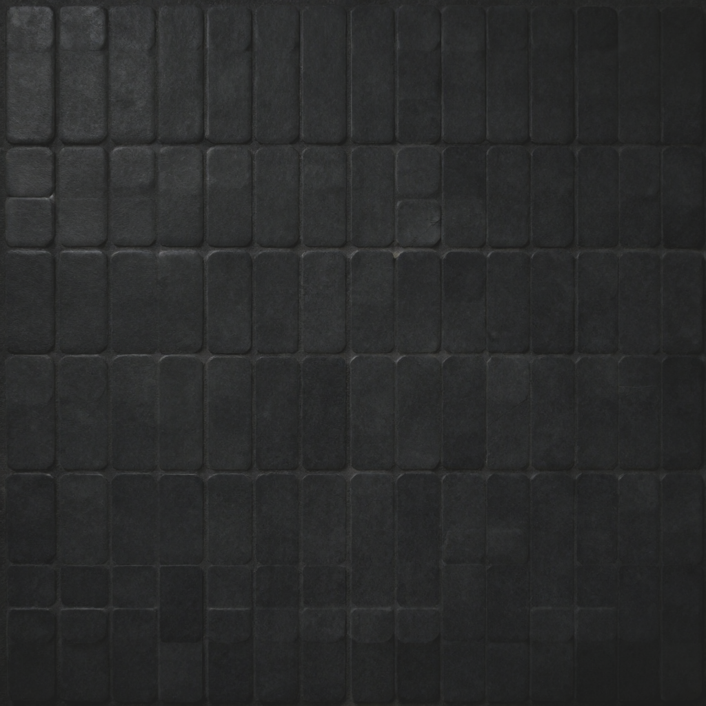
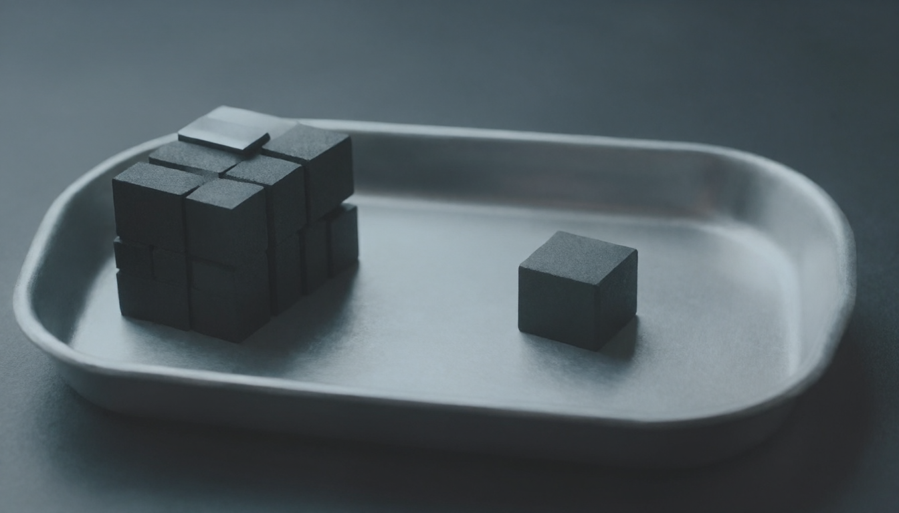
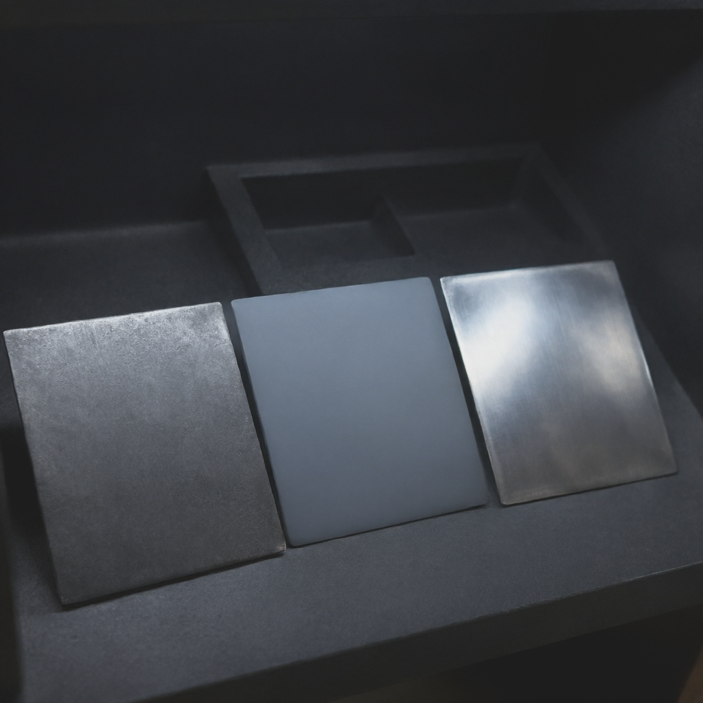

Your baseline is ~3 characters in 4 correct, not 100% — and no setting fixes it.
The official recipe (2048², 40 steps, prompt rewriter) measured worse at 68.5% for 3× the cost.

Your baseline, visualised: a regular tile field where roughly one tile in four is subtly defective — the same ~3-in-4 character accuracy, and no setting repairs it.
HiDream-O1 needs one file, not three
No VAE, no separate text encoder. That structurally eliminates the FP8→bf16 upcast that
pushed your Qwen run to 22.4 GB on a 22.5 GB card — zero headroom, and a license that is
non-commercial if VidiFlow ever ships.
Caveat that sits on the #1 pick: HiDream-O1's text scores are author-reported. No independent
OCR benchmark exists yet. VRAM peak also unmeasured — the ~17 GB figure is a third-party run, not ours.

22.4 GB of load on a 22.5 GB card: zero headroom. The overhanging stack is the Qwen run; the single block with clear floor is HiDream-O1 once the FP8→bf16 upcast is structurally removed.

Graded evidence, one slot empty. The three plates are graded runs; the empty slot is the independent OCR benchmark for HiDream-O1 that does not exist yet.
Paid — keep three
#
Model
Cost @1K
Why
1
gpt-image-2 (OpenAI Batch)
~$0.08–0.11
#1 on text rendering, 10/10 poster test including Chinese, 50% batch discount
2
alibaba/qwen-image-3 (fal)
$0.04
5.00/5 text, ~4× cheaper than GPT — and the only model that invented zero extra text
3
muse-image-1.0 (Meta)
$0.01
5.00/5 text, OpenAI-compatible. Preview — no batch API, 1600px cap
—
grok-imagine-image-2.0
$0.04–0.08
Demoted. Vendor diversity, but no batch discount. Pin before
quality retires 2026-11-02
Your Gemini complaint is explained, not contradicted. Both benchmarks put Nano Banana in the
passing tier — but both used short, quoted strings with an explicit “render exactly”
instruction. Real page copy is longer and multi-line. That is why the benchmarks pass and your pages
don’t. Keep it for illustration, not typography.
Two things worth knowing before you build on this
Latin copy is close to solved. CJK, diacritics and small print are not.
SandBase’s vision-LLM grader silently “corrected” 14 Chinese strings — if you
auto-verify CJK with a vision model it will lie. A human has to read those.
FLUX.2 ranks #1 of 23 at IMG.LY but 6/10 at SandBase, and BFL markets it as best-in-class for
text. The contradiction is real — FLUX is an English-only lane.
Recommended next step
Pull HiDream-O1 + Mage-Flow (~12.3 GB total, both MIT), then run a
character-exact transcription test on real VidiFlow brand strings before trusting either.
Six prompts separates 0.91 from 0.87.